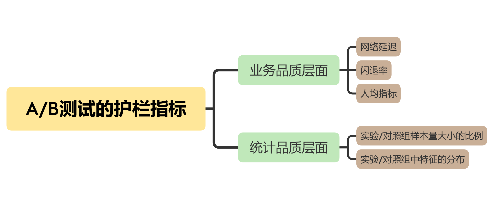

- 00 开篇词 用好A_B测试，你得这么学.md.html
- 01 统计基础（上）：系统掌握指标的统计属性.md.html
- 02 统计基础（下）：深入理解A_B测试中的假设检验.md.html
- 04 确定指标：指标这么多，到底如何来选择？.md.html
- 05 选取实验单位：什么样的实验单位是合适的？.md.html
- 06 选择实验样本量：样本量越多越好吗？.md.html
- 07 分析测试结果：你得到的测试结果真的靠谱吗？.md.html
- 08 案例串讲：从0开始，搭建一个规范的A_B测试框架.md.html
- 09 测试结果不显著，要怎么改善？.md.html
- 10 常见误区及解决方法（上）：多重检验问题和学习效应.md.html
- 11 常见误区及解决方法（下）：辛普森悖论和实验组_对照组的独立性.md.html
- 12 什么情况下不适合做A_B测试？.md.html
- 13 融会贯通：A_B测试面试必知必会（上）.md.html
- 14 举一反三：A_B测试面试必知必会（下）.md.html
- 15 用R_Shiny，教你制作一个样本量计算器.md.html
- 加餐 试验意识改变决策模式，推动业务增长.md.html
- 导读 科学、规范的A_B测试流程，是什么样的？.md.html
- 结束语 实践是检验真理的唯一标准.md.html
- 捐赠
04 确定指标：指标这么多，到底如何来选择？
你好，我是博伟。
上节课，我们学习了确定评价指标的几种方法，包括量化产品/业务不同阶段的目标，采取定量+定性的方法，或者借鉴行业内其他公司的经验等。你也发现了，这些方法的局限性在于只能选出单个评价指标，而且也没有考虑到评价指标的波动性对结果准确度的影响。
今天我们会更进一步，去看看在实际的复杂业务场景中，确定评价指标的方法，以及计算指标的波动性的方法。然后，我们再看看为了确保A/B测试结果的可靠性，应该如何去确定护栏指标。
综合多个指标，建立总体评价标准
在实际的业务需求中，有时会出现多个目标，同一目标也可能有多个都很重要的评价指标，需要我们把它们都综合起来考虑。对于单个指标，我们可以用上一讲的方法来确定；但如果要综合考虑多个指标时，又要如何考虑呢？
我们先看一个例子。
亚马逊和用户沟通的一个重要渠道就是电子邮件，它有一个专门给用户发送电子邮件的平台，通过两种方式来精准定位用户：
- 基于用户的历史购买数据来构建用户的个人喜好，通过推荐算法来发邮件给用户做推荐；
- 亚马逊的编辑团队会人工精选出推荐产品，通过电子邮件发送给用户。
确定了精准用户以后，亚马逊还面临一个问题：要用什么指标来衡量电子邮件的效果呢？
你可能会想到，给用户发送邮件是为了让他们购买，所以邮件产生的收入可以作为评价指标。
实际上，亚马逊最初就是这么做的：他们确定的假设是通过多发电子邮件来增加额外的收入，评价指标就是邮件产生的收入。
那么这个时候，一个假想的A/B测试就被设计了出来。
- 在实验组，我们给用户发邮件。
- 在对照组，我们不给用户发邮件。
结果可想而知。对照组没有收到任何邮件，也就不会有邮件产生的收入。而在实验组的用户，由于收到很多邮件，所以产生了不少收入。
出现这个结果的根本原因是，这个指标本身是单调递增的。也就是说，发的电子邮件越多，点击的用户也会越多，从邮件中获得的收入也会越多。所以，想要有更多的收入，就要发更多的邮件。
但现实情况是，用户收到的邮件多到一定程度后，他们就会觉得是垃圾邮件，被骚扰了，结果就是影响了用户体验，用户选择退订（Unsubscribe）邮件。而用户一旦退订，以后就再也接收不到来自亚马逊的邮件了。
把邮件产生的收入作为评价指标，可以说只是用来优化短期的收入，并没有考虑到长期的用户价值。用户一旦因为被骚扰而退订，亚马逊就失去了在未来给他们发邮件做营销的机会了。所以，邮件产生的收入并不适合作为评价指标，我们需要综合考虑发邮件所带来的好处和潜在的损失，结合多个指标，构建一个总体评价标准 （Overall Evaluation Criteria，简称OEC）。
那具体怎么做呢？我们可以给每个实验/对照组计算OEC：
\[- \\mathrm{OEC}=\\frac{\\left(\\Sigma\_{i}{ Revenue-S\*Unsubscribe\\\_lifetime\\\_loss}\\right)} {n}- \]
我来具体解释下这个公式。
- i，代表每一个用户。
- S，代表每组退订的人数。
- Unsubscribe_lifetime_loss ，代表用户退订邮件带来的预计的损失。
- n，代表每组的样本大小。
当亚马逊实施了这个OEC之后，惊讶地发现有一半以上电子邮件的OEC都是负的，这就说明多发邮件并不总是能带来正的收益。
当亚马逊发现退订会造成这么大的长期损失以后，就改进了它的退订页面：从退订所有的亚马逊邮件到退订某一个类别的邮件。比如可以选择只退订亚马逊图书，从而避免了全部退订，也减少了长期的潜在损失。
通过刚刚的分析，我们可以看到，当要考察的事物包含多个方面时，只有综合各方面的指标，才能把握总体的好坏。这也是使用OEC最明显的一个好处。最常见的一类OEC，就是亚马逊的这种结合变化带来的潜在收益和损失的OEC。需要注意的是，这里的“损失”还有可能是护栏指标，也就是说OEC有可能会包含护栏指标。
另外，使用OEC的另一个好处就是可以避免多重检验问题（Multiple Testing Problem）。如果我们不把不同的指标加权结合起来分析，而是单独比较它们，就会出现多重检验的问题，导致A/B测试的结果不准确。多重检验问题是A/B测试中一个非常常见的误区，我在进阶篇中会具体讲解。
解决了单一评价指标不能应对复杂A/B测试的场景的问题后，我们继续学习评价指标的最后一个要点：波动性。在实际业务场景中，评价指标的值会因各种因素的影响而发生波动。如果忽视了这一点，就很有可能得出错误的测试结论。
如何衡量评价指标的波动性？
还记得我们上节课所学的音乐App要“增加自动播放功能”的例子吗？
假如，这个音乐App没有自动播放功能之前，每个月的用户续订率的波动范围是[65%-70%]。我们在A/B测试中发现，实验组（有自动播放功能）的续订率69%，确实比对照组（没有自动播放功能）的续订率66%要高。
那么，这个结果是可信的吗？达到A/B测试的目的了吗？答案显然是否定的。
虽然实验组的数据要比对照组的好，但是这些数据都在正常的波动范围内。所以，增加自动播放功能和提升续订率之间的因果关系，在这次实验中就没有被建立起来，因为这两组指标的差异也可能只是正常的波动而已。但是，如果我们事先不知道评价指标的波动性和正常波动范围，就很有可能建立错误的因果关系。
那么，如何才能知道评价指标的这个正常波动范围呢？
在统计学里面，指标的波动性通常用其平均值和平均值的标准差来表示，一个指标平均值的标准差越大，说明其波动性越大。这里面要注意，变量平均值的标准差又叫做标准误差*（*Standard Error****）。关于标准差的概念，你可以再回顾下第1节课的统计学基础。
评价指标的正常波动范围，就是置信区间。那具体该怎么计算呢？
在实践中，计算波动范围一般有统计公式和实践经验两类方法。
第一，根据统计公式来计算。
在统计学中，一般是用以下公式构建置信区间的：
置信区间 = 样本均值（Sample Mean） ± Z分数*标准误差
根据中心极限定理，当样本量足够大时，大部分情况下数据服从正态分布，所以这里选用z分数。在一般情况下我们选用95%的置信区间，对应的z分数为1.96。
为了给你形象地展示置信区间，我们在这里假设指标的样本均值为50、标准误差为0.1，服从正态分布，那么，该指标的95%的置信区间为 [50-1.96*0.1， 50+1.96*0.1] = [49.8, 50.2]。
你可能注意到了，我在用上面这个公式计算置信区间，假设了一个标准误差。但实际情况上，标准误差是需要我们来计算的。而且，计算标准误差是非常关键的一步。
对于简单的指标，主要是概率类和均值类，我们可以用统计公式来计算标准误差。
概率类的指标，常见的有用户点击的概率（点击率）、转化的概率（转化率）、购买的概率（购买率），等等。
这类指标在统计上通常服从二项分布，在样本量足够大的情况下，也可以近似为正态分布（关于二项分布和正态分布，你可以回顾下第1节课的相关内容）。
所以，概率指标的标准误差，我们可以通过下面这个公式计算：- $\(- \\text { Standard Error }=\\sqrt{\\frac{p(1-p)}{n}}- \)$
其中，p代表事件发生的概率。
均值类的指标，常见的有用户的平均使用时长、平均购买金额、平均购买频率，等等。根据中心极限定理，这类指标通常也是正态分布。
所以，均值类指标的标准误差，我们可以这样计算：
\[- \\text {Standard Error}=\\sqrt{\\frac{s^{2}}{\\mathrm{n}}}=\\sqrt{\\frac{\\sum\_{i}^{n}\\left(x\_{i}-\\bar{x}\\right)^{2}}{n(n-1)}}- \]
其中，s代表样本的标准差，
n=样本大小，
\(x\_{i}\)=第i个用户的使用时长或者购买金额等，
\(\\bar{x}\)= 用户的平均使用时长或者购买金额等。
第二，根据实践经验来确定。
在实际应用中，有些复杂的指标可能不符合正态分布，或者我们根本不知道它们是什么分布，就很难甚至是没办法找到相应的统计公式去计算了。这时候，要得到评价指标的波动范围，我们需要结合实践经验来估算。
1.A/A测试
我们可以跑多个不同样本大小的A/A测试，然后分别计算每个样本的指标大小，计算出来后，再把这些指标从小到大排列起来，并且去除最小2.5% 和最大2.5%的值，剩下的就是95%的置信区间。
2.Bootstrapping算法
我们可以先跑一个样本很大的A/A测试，然后在这个大样本中进行随机可置换抽样（Random Sample with Replacement）， 抽取不同大小的样本来分别计算指标。然后采用和A/A测试一样的流程：把这些指标从小到大排列起来，并且去除最小2.5% 和最大2.5%的值，得到95%的置信区间。
在实际应用中，Bootstrapping会更流行些，因为只需要跑一次A/A测试，既节省时间也节省资源。
不过要注意的是，即使对于那些简单的、符合正态分布的、可以用统计方法直接计算方差的指标，如果有条件、有时间的话，我也推荐你同时用统计公式和Bootstrapping两种方法分别计算方差。如果两者的结果差距较大，就需要再去跑更多的A/A测试，所以从两方面验证得到的结果会更保险。
到这里，评价指标的选取方法，以及波动性这个易错点，我们就都学习完了。接下来，我们进入到选取指标的最后一部分内容，如何选取护栏指标，为A/B测试提供质量保障。
护栏指标
A/B测试往往改变的是业务中的某一部分指标（评价指标），所以我们很容易只关注短期的改变，却失去了对业务的大局观（比如长期的盈利能力/用户体验）的掌控或者统计上合理性的检查。因此在实践中，我会推荐每个A/B测试都要有相应的护栏指标。
接下来，我们就从业务品质和统计品质这两个维度，来学习如何选取护栏指标。这里我先用一张图，帮你总结下：

业务品质层面
在业务层面的护栏指标，是在保证用户体验的同时，兼顾盈利能力和用户的参与度。所以，我们通常会用到的护栏指标主要是三个：网络延迟（Latency）、闪退率（Crash Rate）和人均指标。
- 网络延迟
网页加载时间、App响应时间等，都是表征网络延迟的护栏指标。增加产品功能可能会增加网页或App的响应时间，而且用户可以敏感地察觉出来。这个时候，就需要在A/B测试中加入表征网络延迟的护栏指标，确保在增加产品功能的同时，尽可能减少对用户体验的影响 （一般是通过优化底层代码）。
- 闪退率
对于不同的应用程序App来说，不管是在个人电脑端，还是在移动端，都有可能因为CPU、内存或者其他原因出现闪退，导致程序突然关闭。
说到这儿，我想和你分享一件趣事。我在用MS Word写这节课的内容时，就出现了软件闪退。关键是我当时还没有保存，心想几个小时的努力不就白费了嘛，特别心灰意冷。万幸的是，MS Word有自动保存功能。
你看，闪退发生的概率虽然不大，但是会严重影响用户体验。所以，在测试应用程序的新功能时，尤其是针对一些大的改动，闪退率就是一个比较好的护栏指标。
- 人均指标
人均指标可以从两个角度来考虑：
- 收入角度，比如人均花费、人均利润等。
- 用户参与度，比如人均使用时长、人均使用频率等。
这两个角度一般都是实际业务中追求的目标，收入角度代表了产品的盈利能力，用户参与度代表了用户的满意程度。但是，在具体的A/B测试中，我们往往会只关注产品的被测试部分的功能，忽视了对大局的把握。
举个例子。应用商店优化了推荐算法后，推荐的内容更贴近用户的喜好，提高了用户对推荐内容的点击率。我们关注的评价指标点击率提高了，是不是皆大欢喜呢？不是的，因为我们分析后发现，这个新算法推荐内容中的免费App的比例增加了，使得人均花费降低了，进而影响到了应用商店的总体收入。
这个时候，我们可以把人均收入作为护栏指标，去继续优化推荐算法。
统计品质层面
统计方面主要是尽可能多地消除偏差，使实验组和对照组尽可能相似，比如检测两组样本量的比例，以及检测两组中特征的分布是否相似。
造成偏差的原因有很多，可能是随机分组的算法出现了Bug，也可能是样本不够大，还有可能是触发实验条件的数据出现了延迟，不过更多的是具体实施中的工程问题造成的。这些偏差都会影响我们获得准确的实验结果，而护栏指标就是我们发现这些偏差的利器！
1.实验/对照组样本大小的比例
在设计A/B测试的时候，我们就会预先分配好实验组和对照组，通常是把样本等分。也就是说，实验组和对照组样本大小的比例，预期是1:1=1。但有的时候，当实验结束后却发现两者的比例并不等于1，甚至也没有很接近1。这就说明这个实验在具体实施的过程中出现了问题，导致实验组和对照组出现了偏差。
2.实验/对照组中特征的分布
A/B 测试中一般采取随机分组，来保证两组实验对象是相似的，从而达到控制其他变量、只变化我们关心的唯一变量（即A/B测试中的原因）的目的。
比如说，如果以用户作为实验单位的话，那么，在试验结束后去分析两组数据时，两组中用户的年龄、性别、地点等基本信息的分布应该是大体一致的，这样才能消除偏差。否则，实验本身就是有问题的，得出的结果也不是可信赖的。
小结
今天，我们学习了复杂业务场景下如何选取评价指标、评价指标的波动性这个易错点，以及如何选取护栏指标。
有多个指标出现的情况下，我们可以把它们结合在一起，建立总体评价标准，也就是OEC。这里面需要注意的一点是，不同指标的单位、大小可能不在一个尺度上，需要先要对各个指标进行归一化（Normalization）处理，使它们的取值都在一定的范围内，比如[0,1]， 之后再进行结合，从而剔除指标单位/大小的影响。
评价指标的正常波动范围，就是置信区间。计算置信区间是一个重点，对于分布比较复杂的指标我推荐用bootstrapping来计算，对于概率类或者均值类的这些符合二项分布或者正态分布的指标，建议同时用统计公式和Bootstrapping两种方法来计算。
在实践中选取护栏指标的时候，我们主要是从业务品质和统计品质这两个维度来考虑。可以选择的护栏指标有，网络延迟、闪退率、人均指标、实验/对照组样本大小的比例和实验/对照组中特征的分布等。
思考题
你之前在工作中接触过的A/B测试，都会有相应的护栏指标吗？如果有的话，是什么具体的指标呢？这些护栏指标的作用又是什么呢？
欢迎在留言区写下你的思考和想法，我们可以一起交流讨论。如果你觉得有所收获，欢迎你把课程分享给你的同事或朋友，一起共同进步！
© 2019 - 2023 Liangliang Lee. Powered by gin and hexo-theme-book.